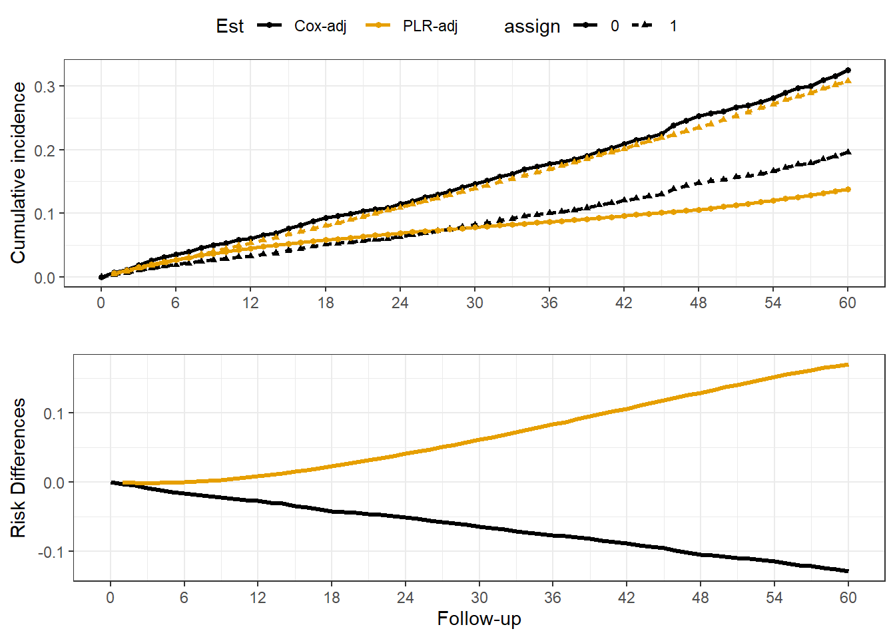
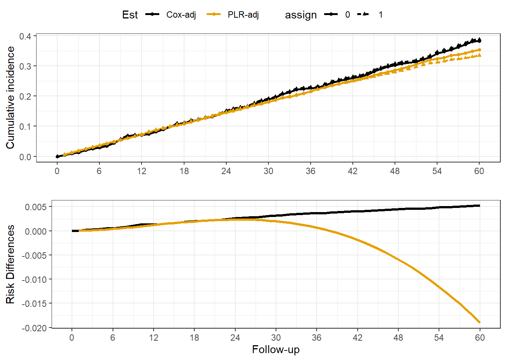

Alert - This is a work-in-progress, errors may exist in code
Additional Topics
Reporting CCW results, and troubleshooting
Evaluation of Target Trial Design Elements
Evaluation of Grace Period
The selection of a grace period is ideally based on knowledge of the treatment in real-world use. For example, if there were treatment guidelines recommending an intervention take place within a specific time-frame (6 weeks from hospital discharge, 1 hour from presentation in the ED etc.), then it makes sense to follow that recommendation in selecting a grace period. However, practical limitations may change this for a project. Even though it may be recognized that 6 weeks is recommended, maybe very few initiate that early and 12 weeks captures more treated cases.
Whatever period is selected, a sound practice is to evaluate how different results appear when different grace periods are selected. It is simplest when the time-frame doesn’t change the estimated effect very much, but a variety of things could impact this. For example, if probability of initiation of treatment varies widely across time due to confounding or some general time-trend then selecting different grace windows could substantially change results.
Model misspefication
Kaplan-Meier Estimator
A reasonable starting point is to evaluate the cloned dataset without probability weighting or pooled logistic regression models. Although this estimator is “naive” in that the artificial censoring is not considered, it is useful for the following reasons:
It allows examination of the overall time trends, censoring and sample size which can reveal fatal issues with the target trial emulation. For example, treatment is too rare in the grace window used, or event rate is unexpectedly high or low.
The non-parametric model allows a visual examination of the cumulative incidences (or event free survival probabilities) which are modeled parametrically in the pooled logistic regression. In other words, examining the time trend can help you determine if a simple polynomial or some more complex spline function is needed. This is not definitive however, because time-varying weights may change the time trends. But in my experience the unadjusted curve provides a good starting point, and practitioners should be very skeptical of weighted analysis that shows dramatically different time trends then the unweighted analysis (e.g. more likely to be an error in coding than real).
Because the pooled logistic regression models a person-time dataset, for large sample sizes and long follow-up periods this can require a large dataset and make estimation very time consuming.
Naive estimator, K-M estimator, assignment is by clone (not person). t_clone is the follow-up time for each clone, taking into account artificial censoring.
2
estimate from the model is the survival probability, so probability of event is 1 - estimate
3
Data is in long form, so one colum per group with cumulative incidence/survival
4
Estimands, cir is ratio analogous to relative risk, and cid is analogous to risk difference
Summarize KM estimator
A causes Y
A not a cause of Y
Figure 1. Naive Kaplan-Meier Estimator
Cox model
For reference a cox model is also estimated, note it does not include X_t.
Next, we proceed to essentially replicate the finding of the KM estimator with a PLR model. No weights or covariate-adjustment is applied yet. These steps are computationally intensive and so this step is important to test your code. The goal is to ensure you have a good starting parametric model for the outcome to avoid any major issues downstream when you add weights. An unadjusted PLR model should closely approximate the KM curves, if it doesn’t then something is wrong. Either the data is too sparse (few events, follow-up exposure time etc.), or the code is wrong.
d_mods_pnl = dta_c_panel %>%nest(data =-model)
Estimation
The PLR model requires specification of a function of time. Many start with a quadratic polynomial (i.e. time + time^2). In my own work, I have found this insufficient, and interestingly have found that linear splines work the best. You must decide for yourself. You could compute AIC or some other model fit statistic to select it empirically. I often compare the PLR estimates to the non-parametric estimates for validity. However this doesn’t completely avoid issues, because the weighted estimates (time-varying covariates, interactions with time etc.) could conceivably diverge quite a bit from the unadjusted KM estimator. You can either estimate the outcome in a model with both clones combined in one dataset OR estimate cumulative incidences separately (two models with data limited to assign==1 & assign==0 respectively). In the combined data, you must specify an interaction between treatment (clone assignment) and f(time), e.g. time + time^2 + treat + treat*time + treat*time^2, shorthand below is poly(time, 2, raw=T)*assign.
PLR model, with time*treat interaction. Binomial family for logistic regression.
2
The cumulative incidence is 1 - cumulative event-free survival probability. To compute, you take the cumulative product by assignment group.
3
Reorganize data and summarize by group/time similar to above for the KM estimator.
Figure 2. Unadjusted, unweighted cumulative incidences by treatment group (PLR)
d_ci_cmp =bind_rows(select(d_mods, model, est_km) %>%unnest(cols =c(est_km)) %>%mutate(Est ='KM-Naive') %>%select(model, Est, time, pr_ev_1, pr_ev_0, cid),select(d_mods_pnl, model, est_plr_nv) %>%unnest(cols =c(est_plr_nv)) %>%mutate(Est ='PLR-Naive') %>%select(model, Est, time, pr_ev_0, pr_ev_1, cid)) %>%pivot_longer(cols =c(pr_ev_0, pr_ev_1), names_to ='assign', names_prefix ='pr_ev_', values_to ='pr_ev') %>%nest(data =-model)d_gg =mutate(d_ci_cmp, km_gg =map(data, function(x) { d_gg_ci = x %>%ggplot(aes(x=time, color = Est, Group = Est)) +geom_line(aes(y = pr_ev, linetype=assign), linewidth=0.9) +geom_point(aes(y = pr_ev, shape=assign), size=1.2) +scale_x_continuous(breaks =seq(0, 60, 6),limits =c(0, 60)) +scale_color_manual(values = cbbPalette) +theme_bw() +labs(x ='', y ='Cumulative incidence') d_gg_rr = x %>%ggplot(aes(x=time, color = Est, Group = Est)) +geom_line(aes(y = cid), linewidth=1.1) +scale_x_continuous(breaks =seq(0, 60, 6),limits =c(0, 60)) +scale_color_manual(values = cbbPalette) +theme_bw() +labs(x ='Follow-up', y ='Risk Differences') ggarrange(d_gg_ci, d_gg_rr, nrow=2, common.legend = T) }))d_gg$km_gg[[1]] # A -> Yd_gg$km_gg[[2]] # X -> Y
A causes Y
A not a cause of Y
Figure 3. Comparison of Naive PLR versus KM estimator
So the PLR model using a simple polynomial approximates the KM estimator. At this point it would be a project specific judgement whether to accept this, or test out other parametric functions. Consider the following regarding the parametric time trend:
It may not matter if PLR and KM are inconsistent at earlier time-points if the plan is to only summarize the results at later periods.
The non-parametric KM estimator may be imprecise with small sample sizes and/or rare outcomes. The risk difference estimates at each time-point may have considerable random variation, and the parametric model is essentially smoothing out this noise. So while they should be approximately the same, you do not want to overfit the random noise of the KM estimator.
These initial steps will not guarantee a good fit after weighting is applied, it is only a first-look for diagnostic purposes.
If the fit is not satisfying, then simply pick a different function of time. Many others to choose from, basis splines, bs::splines(time, df=6, degree=1), or you can use a mgcv() for penalized splines etc. Also, consider specifying knots at specific time-points like the end of a grace period.
Comparison of Covariate-adjusted PLR with Cox model
Another approach is to compare a pooled logistic regression analysis to a time-invariant Cox model. If time-varying confounding not an issue, this should give a similar result. However, censoring weights are still necessary in final analysis even if no confounding.(Cain et al. 2010)
PLR model with some covariates for adjustment. (model fit for each treatment group)
2
Predict outcome under each assignment strategy.
3
Estimate cumulative survival using cumulative product, within person-clone
4
Summarize mean survival rates by time-period
Note
Note the outcome regression without weights is just for comparison and understanding, the final analysis must include probability weights for artificial censoring even if no confounding.
For comparison, A time-dependent Cox model is fit.
Cox model, with time1, time2 parameters which represent the start and stop time of each interval. Note that althought the cox model is time-dependent and you could adjust for X_t this could be problematic, because X_t also includes time-points post treatment. In our synthetic data, X_t is not a collider (Treat -> X_t <- Outcome) or on the causal path (Treat -> X_t -> Outcome).
d_ci_cmp =bind_rows(select(d_mods_pnl, model, est_cox_adj) %>%unnest(cols =c(est_cox_adj)) %>%mutate(Est ='Cox-adj') %>%select(model, Est, time, pr_ev_1, pr_ev_0, cid),select(d_mods_pnl, model, est_plr_adj) %>%unnest(cols =c(est_plr_adj)) %>%mutate(Est ='PLR-adj') %>%select(model, Est, time, pr_ev_0, pr_ev_1, cid)) %>%pivot_longer(cols =c(pr_ev_0, pr_ev_1), names_to ='assign', names_prefix ='pr_ev_', values_to ='pr_ev') %>%nest(data =-model)d_gg =mutate(d_ci_cmp, cox_gg =map(data, function(x) { d_gg_ci = x %>%ggplot(aes(x=time, color = Est, Group = Est)) +geom_line(aes(y = pr_ev, linetype=assign), linewidth=0.9) +geom_point(aes(y = pr_ev, shape=assign), size=1.2) +scale_x_continuous(breaks =seq(0, 60, 6),limits =c(0, 60)) +scale_color_manual(values = cbbPalette) +theme_bw() +labs(x ='', y ='Cumulative incidence') d_gg_rr = x %>%ggplot(aes(x=time, color = Est, Group = Est)) +geom_line(aes(y = cid), linewidth=1.1) +scale_x_continuous(breaks =seq(0, 60, 6),limits =c(0, 60)) +scale_color_manual(values = cbbPalette) +theme_bw() +labs(x ='Follow-up', y ='Risk Differences') ggarrange(d_gg_ci, d_gg_rr, nrow=2, common.legend = T) }))d_gg$cox_gg[[1]] # A -> Yd_gg$cox_gg[[2]] # X -> Y

A causes Y

A not a cause of Y
Figure 4. Comparison of adjusted PLR versus Cox estimator
Final Comparison
Table 1: Comparison of estimates by model, cumulative incidences, risk differences and relative risks
Note. The IPW-PLR finds a null effect, and similar results to a time-dependent Cox model. PLR = Pooled Logistic Regression, Wtd = with censoring weights, Stab = Marginal Stabilized Weights.
Weight distributions
Overall IPW Distribution
Unstabilized weights
Marginal Stabilized weights
Warning: Unknown or uninitialised column: `marg_ipw`.
Unknown or uninitialised column: `marg_ipw`.
Length Class Mode
0 NULL NULL
The unstabilized weights floor at 1, and we see high weights assigned to some. The marginal weights have a mean of 1 (expected).
IPW Distribution at end of grace period for treatment clones
The weights at the end of the grace period are key so its good to examine them directly:
You can also plot weights across time for diagnostics:
Cain, Lauren E., James M. Robins, Emilie Lanoy, Roger Logan, Dominique Costagliola, and Miguel A. Hernán. 2010. “When to start treatment? A systematic approach to the comparison of dynamic regimes using observational data.”The International Journal of Biostatistics 6 (2): Article 18. https://doi.org/10.2202/1557-4679.1212.